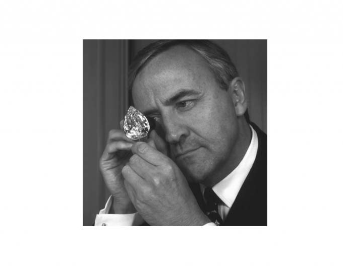

홈 > 브랜드 매거진 > 드비어스
드비어스
드비어스(De Beers)는 1888년 세실 로즈가 설립한 다이아몬드 채굴·거래 기업이다.
산업 분야 패션·럭셔리 · 공개 등급 자료 기반 · 브랜드 평가 4.3 ★

한눈에 보는 브랜드
드비어스(De Beers)는 1888년 세실 로즈가 남아프리카 킴벌리 광산들을 통합해 설립한 다이아몬드 채굴·유통 기업이다. 20세기 내내 원석 공급의 80~85%를 쥔 카르텔로 가격을 통제했고, '다이아몬드는 영원히' 캠페인으로 약혼반지 문화를 만들었다.
현재 앵글로아메리칸이 지분 85%, 보츠와나 정부가 15%를 보유하나, 모회사가 매각·분리를 추진 중이다. 2024년 매출은 약 33억 달러로 전년 대비 23% 줄었다.
브랜드 관점
핵심은 천연 다이아몬드의 희소성 서사다. 드비어스는 1947년 카피라이터 프랜시스 게레티가 쓴 '다이아몬드는 영원히(A Diamond Is Forever)'로, 1930년대 10% 미만이던 다이아 청혼을 표준 의례로 끌어올렸다.
그러나 화학적으로 동일하면서 70~80% 저렴한 랩그로운 다이아몬드가 시장의 절반 가까이를 잠식하며 위축이 가속됐다. 천연 1캐럿 평균가는 2021년 약 6천 달러에서 2025년 약 4천2백 달러로 떨어졌고, 앵글로아메리칸은 3년간 약 68억 달러를 상각한 뒤 2024년부터 매각·기업공개 병행 절차에 들어갔다.
보츠와나 정부와 카타르 자본 컨소시엄 등이 인수 후보로 거론된다. 한국에서도 천연·인조 가격차가 벌어지며 합리적 소비로 인조 웨딩링 수요가 빠르게 재편되는 흐름이 관찰된다.
시작과 성장
시작은 1871년, 18세의 세실 로즈가 킴벌리 다이아몬드 채굴에 뛰어든 때다. 로스차일드 자본과 알프레드 베이트의 지원으로 17년간 경쟁 광산을 사들였고, 1888년 3월 마지막 경쟁자 바니 바나토의 지분까지 합쳐 드비어스 콘솔리데이티드 마인스를 세웠다.
1889년 런던 다이아몬드 신디케이트와 고정 매입 협약을 맺어 공급량과 가격을 조절했고, 1902년 로즈 사망 시 세계 생산의 90%를 장악했다. 제2차 세계대전 후 판매가 부진하자 1947년 N.W.
에이어 대행사의 게레티가 '다이아몬드는 영원히'를 써냈고, 1948년 이후 모든 약혼 광고에 쓰이며 산업을 다시 키웠다. 이후 앵글로아메리칸 체제로 편입됐으며, 2018년 진출한 랩그로운 브랜드와 공급 과잉이라는 새로운 도전에 직면했다.
브랜드 아이덴티티
브랜드 정체성은 영속성과 희소성에 뿌리를 둔다. 핵심 가치는 천연 다이아몬드의 진정성, 추적 가능한 출처, 정서적 약속이다.
상징은 '다이아몬드는 영원히'라는 표어로, 사랑의 불변을 돌의 단단함에 빗댄다. 주된 표적은 약혼·결혼·기념일을 앞둔 소비자와 고가 주얼리 수요층이며, 목소리는 절제되고 격식 있는 고급 톤을 유지한다.
블록체인 추적 플랫폼으로 원산지 신뢰를 강화하며 인조석과의 차별화를 꾀한다.
제품과 서비스
제품은 천연 다이아몬드 원석과 가공석, 프리미엄 인증 브랜드 포에버마크, 고급 주얼리 라인이 중심이다. 2018년 출시한 랩그로운 브랜드 라이트박스는 캐럿당 약 8백 달러 정가로 시작했으나 가격 붕괴로 2025년 사업 종료를 발표했다.
가격대는 수백만 원대 입문 약혼반지부터 수억 원대 하이주얼리까지 폭넓다. 채널은 직영 부티크와 공인 리테일러, 보츠와나 등 산지 유통이다.
사람들
창업자: 세실 로즈(Cecil Rhodes)가 1888년 설립했다. 소유: 앵글로 아메리칸(Anglo American) 85%·보츠와나 정부 15%(2024~2025 매각 절차 진행 중, 미완료).
현재 상태
모회사는 앵글로아메리칸으로 지분 85%를 보유하며, 약화된 시장 속에서 2024년부터 드비어스를 비핵심 자산으로 분류해 매각 또는 기업공개를 통한 분리를 추진하고 있다. 분리는 2026년 상반기 완료를 목표로 한다.
본사는 영국 런던에 있다. 한국 시장의 매장 수와 구체적 운영 현황 등 일부 정보는 미공개다.
타임라인
BI/CI 변천사
함께 읽을 브랜드
 패션·럭셔리 · 매거진 완성티파니
패션·럭셔리 · 매거진 완성티파니티파니는 주얼리 자체만큼이나 색과 포장, 선물의 의식을 브랜드 자산으로 만든다. 블루 박스와 매장 경험은 제품을 구매하는 순간을 특별한 사건으로 바꾸며, 브랜드의 상...
 패션·럭셔리 · 편집 검수자라
패션·럭셔리 · 편집 검수자라자라는 패션을 예측하기보다 시장의 반응을 빠르게 읽고 다시 매장으로 돌려보내는 브랜드다. 트렌드를 길게 기획하는 대신 고객 반응과 유통 속도를 무기로 삼아, 패션을...
 패션·럭셔리 · 매거진 완성스와치
패션·럭셔리 · 매거진 완성스와치스와치는 시계를 고가의 정밀기기에서 매일 바꿔 착용할 수 있는 패션 언어로 전환했다. 시간을 알려주는 기능보다 색, 그래픽, 컬렉션, 가벼운 가격대가 브랜드 경험의...
에르메스는 속도보다 장인성과 기다림의 가치를 브랜드 경험으로 만든다. 제품은 희소성과 품질을 통해 욕망을 만들지만, 더 깊은 차별성은 쉽게 대체되지 않는 제작 태도와...
 패션·럭셔리 · 매거진 완성코치
패션·럭셔리 · 매거진 완성코치코치는 실용적 가죽 제품을 일상적 럭셔리의 영역으로 끌어올린 브랜드다. 과시적 명품보다 접근 가능한 품질과 라이프스타일 이미지를 통해 오래 쓰는 가방의 감각을 브랜드...
 패션·럭셔리 · 편집 검수까르띠에
패션·럭셔리 · 편집 검수까르띠에까르띠에(Cartier)는 1847년 파리에서 설립된 프랑스 럭셔리 주얼리·시계 메종이다.
Sa
Sarah & Sebastian
패션·럭셔리 · 편집 검수Sarah & SebastianSarah & Sebastian는 2025년에 기록된 Fashion 계열의 브랜드 아이덴티티 사례입니다. Made Thought가 아이덴티티 작업의 디자이너로 기록되...
 패션·럭셔리 · 자료 기반투미
패션·럭셔리 · 자료 기반투미투미(TUMI)는 1975년 찰리 클리퍼드가 미국에서 설립한 프리미엄 여행가방·비즈니스 백 브랜드다. 내구성 높은 발리스틱 나일론 소재로 알려졌으며, 2016년 쌤소...